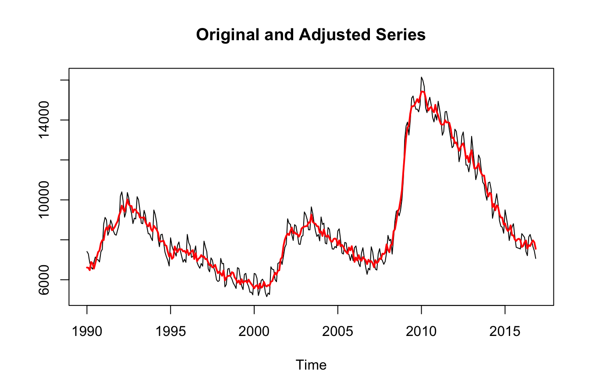

1 A minimal example
You are reading an early draft of Seasonal Adjustment in R. This chapter should be readable but needs polishing.
It is part of the course materials intended for Dec 21, 2022.
Many time series exhibit a regular seasonal pattern over the year. US unemployment, for example, is usually higher from January to March, and again in June and July. Similarly, retail sales tend to peak with the Christmas season.
To model the underlying structure of these series, any regular (seasonal) patterns are estimated and removed from the data. For example, to see if the economy is moving out of a recession during certain months, one wants the labor market data be free from such seasonal effects. Seasonal adjustment decomposes a time series into a trend, a seasonal and an irregular component and removes the seasonal component from the data.
1.1 Installation
If you use R installing X-13ARIMA-SEATS from CRAN is as easy as installing any other R package (Sax and Eddelbuettel 2018):
install.packages("seasonal")1.2 A minimal example
Once the package is installed it can be loaded in the usual way:
The seas() function provides the core functionality of the package. By default, seas calls the automatic procedures of X-13 to perform a seasonal adjustment that works well in most circumstances:
seas(unemp)
#>
#> Call:
#> seas(x = unemp)
#>
#> Coefficients:
#> AR-Nonseasonal-01 MA-Nonseasonal-01 MA-Seasonal-12
#> 0.9436 0.8254 0.8507The first argument of seas is a time series of class “ts”. The unemp example series measures US unemployment and is included in seasonal. The function returns an object of class “seas” that contains the necessary information on the adjustment performed on this time series.
m <- seas(unemp)There are several functions and methods for “seas” objects. The final function returns the adjusted series. The plot method shows a plot with the unadjusted and the adjusted series.
plot(m)
The summary method displays an overview of the model, very similar to the one produced by R’s lm function:
summary(m)
#>
#> Call:
#> seas(x = unemp)
#>
#> Coefficients:
#> Estimate Std. Error z value Pr(>|z|)
#> AR-Nonseasonal-01 0.94360 0.03441 27.43 <2e-16 ***
#> MA-Nonseasonal-01 0.82540 0.05654 14.60 <2e-16 ***
#> MA-Seasonal-12 0.85071 0.03362 25.30 <2e-16 ***
#> ---
#> Signif. codes: 0 '***' 0.001 '**' 0.01 '*' 0.05 '.' 0.1 ' ' 1
#>
#> SEATS adj. ARIMA: (1 1 1)(0 1 1) Obs.: 323 Transform: none
#> AICc: 4324, BIC: 4339 QS (no seasonality in final): 0
#> Box-Ljung (no autocorr.): 22.04 Shapiro (normality): 0.9946